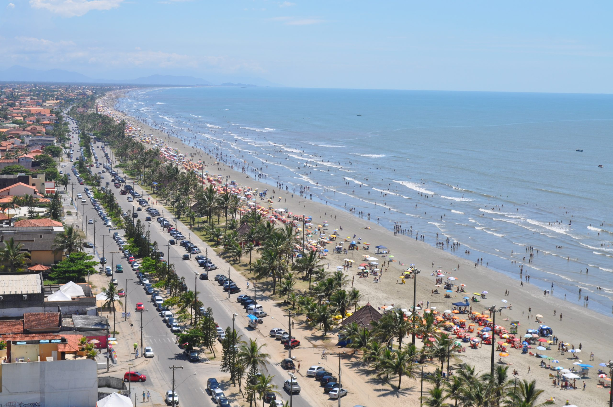
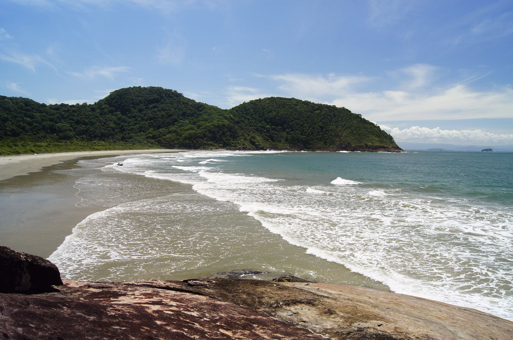
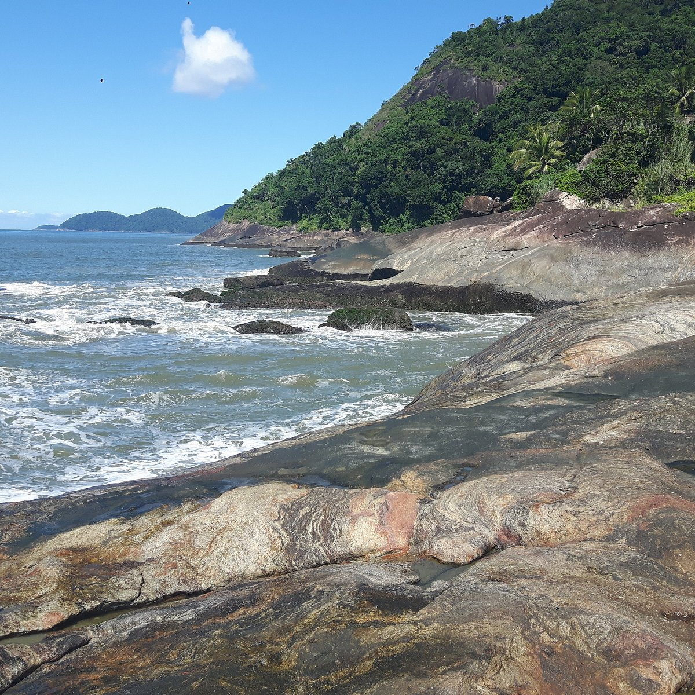

PERUÍBE
História de Peruíbe
A história de Peruíbe, no litoral de São Paulo, remonta ao século XVI com a Aldeia dos Índios Peroibe (tupi para "no rio dos tubarões"), ligada à catequese jesuíta. Inicialmente parte de Itanhaém, o município se emancipou em 18 de fevereiro de 1959, tornando-se uma famosa estância balneária conhecida como "terra da eterna juventude".
Curiosidades
- Lama Negra e Águas Medicinais: Conhecida por suas propriedades medicinais, a lama negra dos manguezais é usada em tratamentos de pele e relaxamento.
- Significado do Nome: Em Tupi, "Peruíbe" deriva de iperu (tubarão) + 'y (rio) + pe (em), significando "no rio dos tubarões".
- Ruínas de Abarebebê: Consideradas por muitos como o local da primeira igreja construída no Brasil.
- Prédio Redondo: O edifício "Serra dos Itatins" é um dos mais famosos e marcantes da orla.
- Natureza Preservada: Quase metade da cidade é coberta por unidades de conservação, incluindo a Estação Ecológica Jureia-Itatins.
- 9 Aldeias Indígenas: A cidade possui uma forte presença indígena, com nove aldeias ativas.
- Festival de Rock: Antigamente, a cidade era um importante cenário para festivais de rock na Baixada Santista.
- Cidade dos Manguezais: O termo Guaraú (uma de suas principais praias) significa "rio dos guarás" (aves vermelhas).
- Roteiro Histórico: Possui sítios arqueológicos como o Sambaqui do Guaraú e as Ruínas da Fazenda São João.
Pontos Turísticos
Praias
- Praia do Guaraú: Com águas tranquilas e cercada pela Mata Atlântica, é um dos pontos mais badalados, ideal para banho e acesso a passeios de barco.
- Barra do Una: Praia paradisíaca dentro da Juréia, famosa pela preservação, águas cristalinas e encontro do rio com o mar.
- Prainha: Fica entre o Costão e a Praia do Guaraú, com acesso por trilha, conhecida pelas águas claras e vista panorâmica.
- Praia Caramborê: Praia semi-deserta com piscinas naturais formadas pelo rio no canto direito.
- Estação Ecológica da Juréia-Itatins: Área de preservação com trilhas, cachoeiras (como a do Rio do Ouro) e intensa biodiversidade.
- Ilha do Guaraú: Ótima para mergulho livre e observação de aves.


